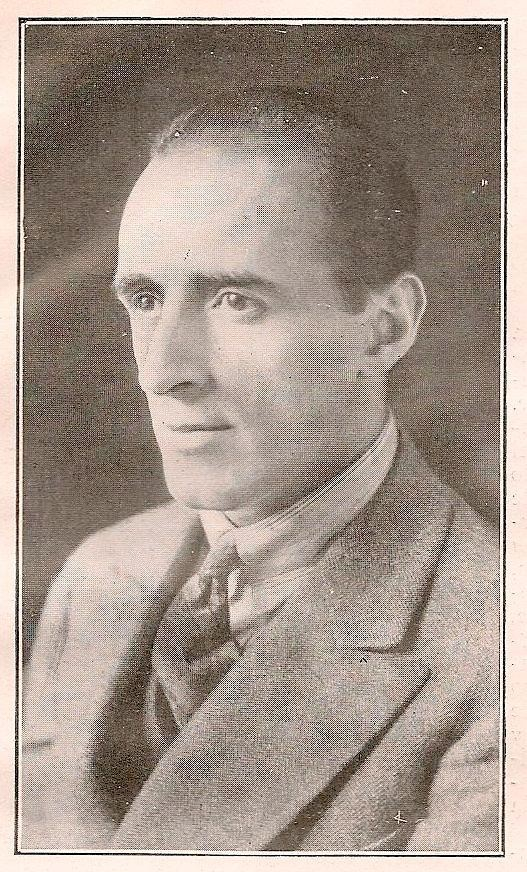
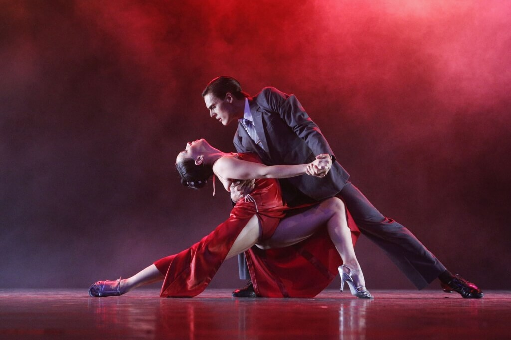
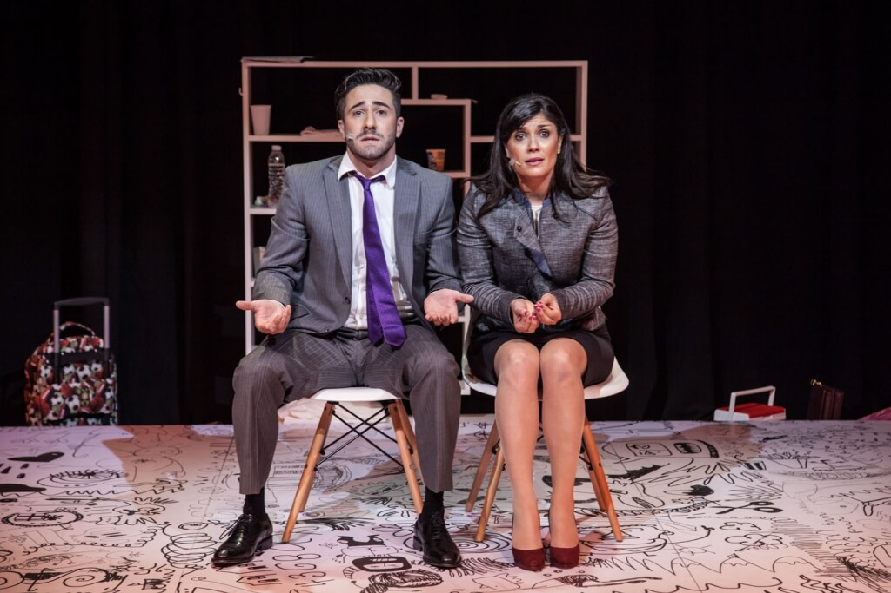
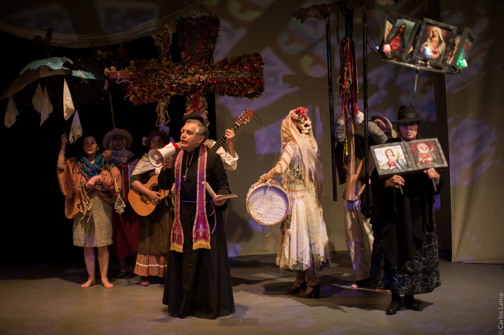
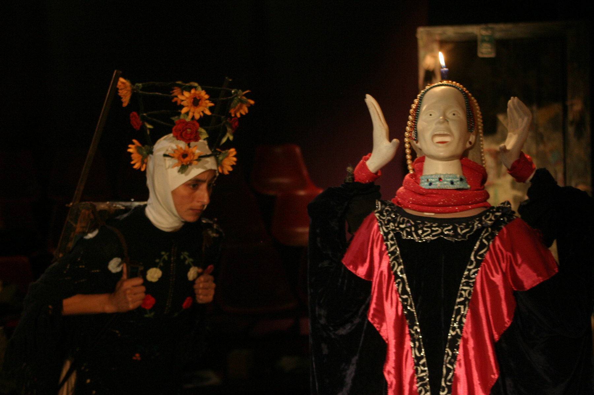

Colombian Theatre
Luis Enrique Osorio
"The Father of Colombian Theatre"
-

- Playwright, director, musician.
- His first play was titled 'Flor Tardía', which he published in 1917. He published several other plays and novels over the years.
- In 1924, Osorio establishes his own company, Dramática Colombiana. In this company are young poets, seamstresses, newsboys, and shopkeepers.
- In 1943 he established a different company, the Bogotá Comedy Company though it soon dissolved due to the theatre being closed.
- In June of 1943 he begins publishing El Teatro Monthy Magazine. He publishes eight issues, the last in 1946.
- In the late 40s his theatre company becomes more popular in Bogotá. He introduces music and variety acts into his comedic shows.
- In 1952, he oversaw the construction of a new theater, the La Comedia Theater, which earns Osorio the Gonzalo Jiménez de Quesada Prize. He is considered "The Father of Colombian Theatre" due to his contributions.
- A few of the comedies he wrote:
- El Rajá de Pasturacha
- Flor Tardía
- La Familia Política
- El Zar de Precios
- Los Celos del Fantasma
- A few of the novels he wrote:
- La Mágica Ciudad del Cine
- Un Romance de Viaje
- La Bendición
- La Mujer Blanca
- Paso a la Reina
- A few his other writings:
- Romances y Entrevistas y Poesías
- Visión de América, Teatro, cuatro tomos
- El Salario Familiar
- Geografía Económica y Social de Colombia
- El Universo en las Manos del Niño
Ibero-American Theater Festival
A masked performance at the festival
A Tango performance by Argentinian dancers
A performance of Los Monstruos, written and directed by Emiliano Dionisi
The Ibero-American Theater Festival is an internal festival to celebrate all things performing arts. Not only is the festival the largest theater event in Colombia, but it's also the largest theater event in the world! Each year has a theme and a country of honor, and it takes place in the theater capital of the world —— Bogotá.
The first festival was put on in 1988, led by actress Fanny Mickey and playwright Ramiro Osorio to celebrate Bogotá's 450th anniversary. The tradition has continued (on to the 16th edition!) and the event has expanded. The event is now over two weeks long and boasts hundreds of performances from 14 different countries.
TEATRO LA CANDELARIA
El Quixote, a short play based on the novel by Miguel de Cervantes.
Camilo, a play written and performed in remembrance of Camilo Torres on the 50th anniversary of his death.
Nayra (The Memory), is a creative collection that explores themes of health, death, and dispossession.
La Candelaria was founded in 1966 by a group of independent artists and intellectuals from the National University of Colombia. La Candelaria set out to create a new independent theatre movement in Colombia. As a group, La Candelaria lean away from the capitalistic aspects of theater, opting to lean into the more natural, humanistic ones. Not only do they create original plays, but they research the art of theater and its social contexts.
Their Repertoire includes:
- El Quixote
- Nayra
- Camilo
- Soma Mnemosine
- Si el Rió Hablara
- Refracción Mientras No Se Apague el Sol
The Musical Theatre School
The Musical Theater School is a performance arts school in Medellin that puts on productions for all ages. They are known for putting on various productions of titles that are popular worldwide— such as Wicked and Frozen. The school offers classes to strengthen their students' skills in musical theater, such as vocal training, dance lessons, and acting classes. Each show has a wide range of participants, from small children to adults. This theater gives everyone the opportunity to shine.
Their most recent productions include:
- Wicked
- Frozen
- Annie
- Aladdin
- Shrek
- Beauty and the Beast
A poster for Wicked, performed in December 2024
A poster for Frozen, performed in December 2023
A poster for Beauty and the Beast, performed in May 2017